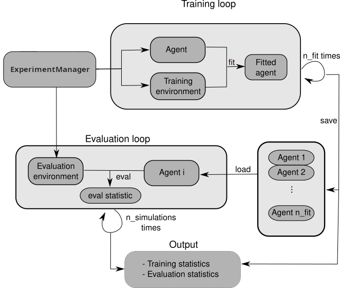

Quick Start for Reinforcement Learning in rlberry¶
$$\def\CC{\bf C} \def\QQ{\bf Q} \def\RR{\bf R} \def\ZZ{\bf Z} \def\NN{\bf N}$$
Importing required libraries¶
import numpy as np
import pandas as pd
import time
from rlberry.agents import AgentWithSimplePolicy
from rlberry_scool.agents import UCBVIAgent
from rlberry_scool.envs import Chain
from rlberry.manager import (
ExperimentManager,
evaluate_agents,
plot_writer_data,
read_writer_data,
)
Choosing an RL environment¶
In this tutorial, we will use the Chain(from rlberry_scool) environment, which is a very simple environment where the agent has to go from one end of a chain to the other end.
env_ctor = Chain
env_kwargs = dict(L=10, fail_prob=0.1)
# chain of length 10. With proba 0.1, the agent will not be able to take the action it wants to take.
env = env_ctor(**env_kwargs)
The agent has two actions, going left or going right, but it might
move in the opposite direction according to a failure probability
fail_prob=0.1.
Let us see a graphical representation
env.enable_rendering()
observation, info = env.reset()
for tt in range(5):
observation, reward, terminated, truncated, info = env.step(1)
done = terminated or truncated
env.save_gif("gif_chain.gif")
# clear rendering data
env.clear_render_buffer()
env.disable_rendering()
Defining an agent and a baseline¶
We will compare a RandomAgent (which select random action) to the UCBVIAgent(from rlberry_scool), which is an algorithm that is designed to perform an efficient exploration. Our goal is then to assess the performance of the two algorithms.
This is the code to create your RandomAgent agent :
# Create random agent as a baseline
class RandomAgent(AgentWithSimplePolicy):
name = "RandomAgent"
def __init__(self, env, **kwargs):
AgentWithSimplePolicy.__init__(self, env, **kwargs)
def fit(self, budget=100, **kwargs):
observation, info = self.env.reset()
for ep in range(budget):
action = self.policy(observation)
observation, reward, terminated, truncated, info = self.env.step(action)
def policy(self, observation):
return self.env.action_space.sample() # choose an action at random
Experiment Manager¶
One of the main feature of rlberry is its ExperimentManager class. Here is a diagram to explain briefly what it does.
In a few words, ExperimentManager spawns agents and environments for training and then once the agents are trained, it uses these agents and new environments to evaluate how well the agent perform. All of these steps can be done several times to assess the stochasticity of agents and/or of the environment.
Comparing the expected rewards of the final policies¶
We want to assess the expected reward of the policy learned by our agents for a time horizon of (say) \(T=20\).
To evaluate the agents during the training, we can (arbitrary) use 10 Monte-Carlo simulations (n_simulations in eval_kwargs), i.e., we do the evaluation 10 times for each agent and at the end we take the mean of the obtained reward.
To check variability, we can train many instance of the same agent with
n_fit (here, we use only 1 to be faster). Each instance of agent will train with a specific
budget fit_budget (here 100). Remark that fit_budget may not mean
the same thing among agents.
In order to manage the agents, we use an Experiment Manager. The manager will then spawn agents as desired during the experiment.
To summarize:
We will train 1 agent (n_fit) with a budget of 100 (fit_budget). During the training, the evaluation will be on 10 Monte-Carlo run (n_simulations), and we doing it for both Agent (UCBVIAgent and RandomAgent)
# Define parameters
ucbvi_params = {"gamma": 0.9, "horizon": 100}
# Create ExperimentManager to fit 1 agent
ucbvi_stats = ExperimentManager(
UCBVIAgent,
(env_ctor, env_kwargs),
fit_budget=100,
eval_kwargs=dict(eval_horizon=20, n_simulations=10),
init_kwargs=ucbvi_params,
n_fit=1,
)
ucbvi_stats.fit()
# Create ExperimentManager for baseline
baseline_stats = ExperimentManager(
RandomAgent,
(env_ctor, env_kwargs),
fit_budget=100,
eval_kwargs=dict(eval_horizon=20, n_simulations=10),
n_fit=1,
)
baseline_stats.fit()
[INFO] Running ExperimentManager fit() for UCBVI with n_fit = 1 and max_workers = None.
[INFO] ... trained!
[INFO] Running ExperimentManager fit() for RandomAgent with n_fit = 1 and max_workers = None.
[INFO] ... trained!
Evaluating and comparing the agents :
output = evaluate_agents([ucbvi_stats, baseline_stats], n_simulations=10, plot=True)
[INFO] Evaluating UCBVI...
[INFO] [eval]... simulation 1/10
[INFO] [eval]... simulation 2/10
[INFO] [eval]... simulation 3/10
[INFO] [eval]... simulation 4/10
[INFO] [eval]... simulation 5/10
[INFO] [eval]... simulation 6/10
[INFO] [eval]... simulation 7/10
[INFO] [eval]... simulation 8/10
[INFO] [eval]... simulation 9/10
[INFO] [eval]... simulation 10/10
[INFO] Evaluating RandomAgent...
[INFO] [eval]... simulation 1/10
[INFO] [eval]... simulation 2/10
[INFO] [eval]... simulation 3/10
[INFO] [eval]... simulation 4/10
[INFO] [eval]... simulation 5/10
[INFO] [eval]... simulation 6/10
[INFO] [eval]... simulation 7/10
[INFO] [eval]... simulation 8/10
[INFO] [eval]... simulation 9/10
[INFO] [eval]... simulation 10/10
☀ : For more in depth methodology to compare agents, you can check here
Comparing the agents during the learning period¶
In the previous section, we compared the performance of the final policies learned by the agents, after the learning period.
To compare the performance of the agents during the learning period (in the fit method), we can estimate their cumulative regret, which is the difference between the rewards gathered by the agents during training and the rewards of an optimal agent. Alternatively, if we cannot compute the optimal policy, we could simply compare the rewards gathered during learning, instead of the regret.
First, we have to record the reward during the fit as this is not done
automatically. To do this, we can use the writer_extra optional parameter.
Then, we fit the two agents.
ucbvi_params["writer_extra"] = "reward"
random_params = {"writer_extra": "reward"}
# Create ExperimentManager for UCBI to fit 10 agents
ucbvi_stats = ExperimentManager(
UCBVIAgent,
(env_ctor, env_kwargs),
fit_budget=50,
init_kwargs=ucbvi_params,
n_fit=10,
agent_name="UCBVIAgent2",
)
ucbvi_stats.fit()
# Create ExperimentManager for baseline to fit 10 agents
baseline_stats = ExperimentManager(
RandomAgent,
(env_ctor, env_kwargs),
fit_budget=5000,
init_kwargs=random_params,
n_fit=10,
agent_name="RandomAgent2",
)
baseline_stats.fit()
[INFO] Running ExperimentManager fit() for UCBVIAgent2 with n_fit = 10 and max_workers = None.
[INFO] ... trained!
[INFO] Running ExperimentManager fit() for RandomAgent2 with n_fit = 10 and max_workers = None.
[INFO] ... trained!
[INFO] Running ExperimentManager fit() for OptimalAgent with n_fit = 10 and max_workers = None.
[INFO] ... trained!
Remark that fit_budget may not mean the same thing among agents. For RandomAgent fit_budget is the number of steps in the environments that the agent is allowed to take.
The reward that we recover is recorded every time env.step is called.
For UCBVI this is the number of iterations of the algorithm and in each
iteration, the environment takes 100 steps (horizon) times the
fit_budget. Hence the fit_budget used here
Finally, we plot the reward. Here you can see the mean value over the 10 fitted agent, with 2 options (raw and smoothed). Note that, to be able to see the smoothed version, you must have installed the extra package scikit-fda, (For more information, you can check the options on the install page).
# Plot of the reward.
output = plot_writer_data(
[ucbvi_stats, baseline_stats],
tag="reward",
title="Episode Reward",
)
# Plot of the reward.
output = plot_writer_data(
[ucbvi_stats, baseline_stats],
tag="reward",
smooth=True,
title="Episode Reward smoothed",
)
☀ : As you can see, different visualizations are possible. For more information on plots and visualization, you can check here (in construction)